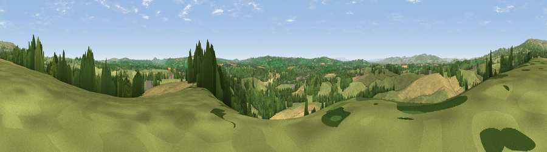

Viewpoint near Boraston
#11266 in England · top 27% of its area beats it · near Boraston · access?Where it is
The exact computed spot (SO 60425 70325). Click the marker for map links.
Public access: no public right of way or access land is recorded at this exact spot — it may be on private land. Computed from Natural England's CRoW access layer and OpenStreetMap rights of way — not the legal definitive map. Always verify locally.
The view, rendered

A 360° render of this exact spot computed from the terrain model, tree cover and land cover — summer colours, afternoon light, calibrated against photographs of famous viewpoints. Real trees, hedges and buildings will differ in detail.
The panorama
Grey silhouette: terrain skyline in each direction (720 bearings, Earth curvature and refraction included). Dashed green: skyline with trees (+15 m) and buildings (+8 m) as obstacles. Blue strip: how far the ground is visible on each bearing.
Where the view opens
Wedge length = distance to the farthest visible ground on that bearing (vegetation-aware). Rings at 10, 25 and 50 km.
What fills the view
61% grassland · 21% woodland · 18% cropland ·
Angular shares of the visible panorama (visual magnitude), not map area. Landscape diversity 0.42 (0–1 Shannon).
Key numbers
More beautiful places nearby
The staircase of upgrades: each row has a higher view potential than everything closer. Driving times are estimates from straight-line distance, calibrated against real road routing — check an actual route before setting out.
| Place | Direction | Drive | Score |
|---|---|---|---|
| Viewpoint near Hope Bagot | N · 2 km | ~5 min | 63.1 |
| Viewpoint near Hope Bagot | N · 3 km | ~8 min | 73.7 |
| Viewpoint near Cleehill | NNW · 6 km | ~13 min | 82.3 |
| Titterstone Clee | N · 8 km | ~16 min | 83.8 |
| North Hill | SE · 29 km | ~46 min | 86.8 |
| Worcestershire Beacon | SSE · 30 km | ~47 min | 87.1 |
| Viewpoint near West Quantoxhead | SSW · 137 km | ~160 min | 87.9 |
| Viewpoint near West Quantoxhead | SSW · 137 km | ~161 min | 88.7 |
52.32958, -2.58215 · source: screening · position refined by local search. Computed location — check access rights before visiting.